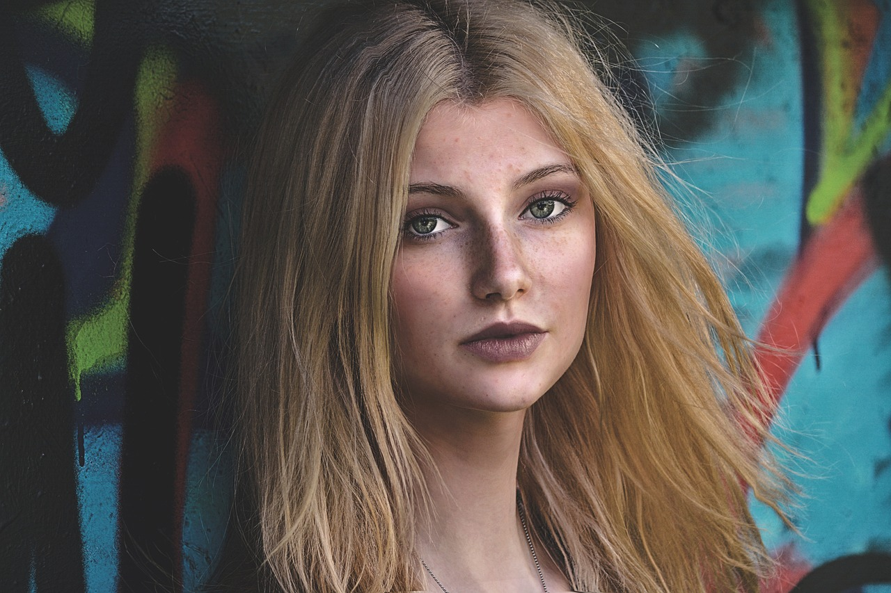

A VOW TO ILLUMINATE
If your photos aren’t good enough, then you’re not close enough.”
Uncharted Path into Photography
In the rugged landscapes of Anatolia, Tahir Ayaz discovered his passion for the untamed. Born in 1995, his journey into the heart of the wild began when he decided to explore the majestic lions of Anatolia. Little did he know that this encounter would ignite a lifelong fascination with the captivating art of photography.
His objective upon embarking on his photographic journey was to unveil the unseen, showcasing both the positive and the negative aspects of the world.
A Monumental Vision: The Earth from the Eyes of Kubilay
In 2017, fueled by an insatiable curiosity and a passion for the uncharted, Tahir Ayaz embarked on a monumental vision, encapsulating the diversity and hidden wonders of our planet. Through his lens, he unveils the stories of people, places, and phenomena that remain hidden from the mainstream, inviting the world to witness the unseen beauty that unites us all.
The Photographer as Witness
Kubilay's journey into photography took a distinct turn when he decided to confront the stark realities of war. In 2022, Kubilay founded "Lens of Resilience," a project dedicated to showcasing the strength and stories of individuals affected by conflict. He got involved into the war as a photographer.
"Art is the most beautiful of all lies."
"Uncharted Whispers" Exhibition
Sat, Dec 9, 2023 - Sun, Dec 24, 2023
Tahir Kubilay Art Museum
36 Cadre Rue
Quebec, Canada
Exhibition
TAHIR
KUBILAY
UNCHARTED WHISPERS
-QUEBEC-
AN EXCEPTIONAL WORLDWIDE EXHIBITION SHOWCASING THE UNMISTAKABLE ARTISTRY
OF ONE OF THE FOREMOST VOICES IN CONTEMPORARY PHOTOGRAPHY.
Comments
Clients Say

Elif Demirci
@elifdemirci

Mehmet Marangoz
@marangoz
Tahir Kubilay not only brings an exceptional artistic perspective, but is also a trusted professional in the world of freelance photojournalism. My experience working with him has been impeccable, highlighting not only his outstanding talent, but also his commitment to providing clients with a superior experience. I highly recommend his services!
Can Kose
@cankosee
He can demonstrate not only impressive artistic skills, but also a high level of professionalism in photojournalism. His photographs manage to capture not only the essence of the moment, but also to meet the expectations of his clients. In some cases, more contextualization around war photos would have added value, but his services are undoubtedly of high quality.

Ruya Peynirci
@peyniruyaa
Tahir is not only a passionate artist but also a solid professional in the world of photojournalism. His impressive portfolio illustrates not only his artistic skills but also his dedication to his projects. However, exploring a wider range of perspectives or themes could bring more versatility to his portfolio. A talented photojournalist with a lot of potential!
In tense and often dangerous situations, Tahir Kubilay demonstrates the courage and determination to document key aspects of world conflicts. His photographs succeed in capturing the human story behind conflict zones, highlighting pain, resilience and the struggle for survival.